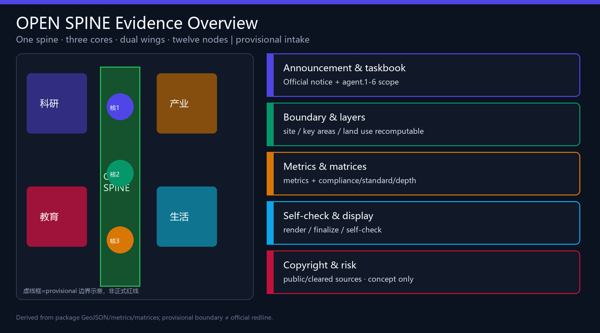
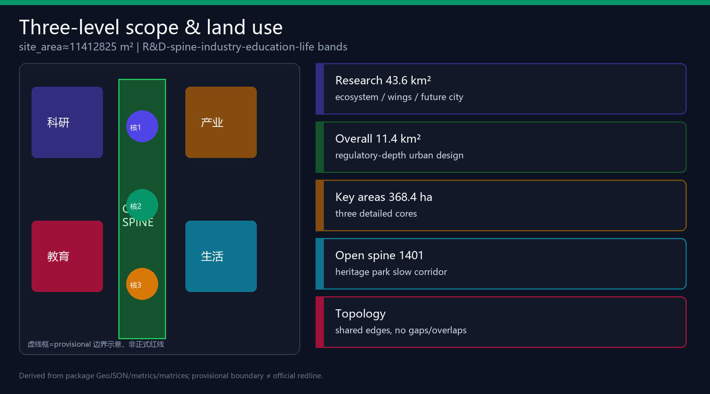
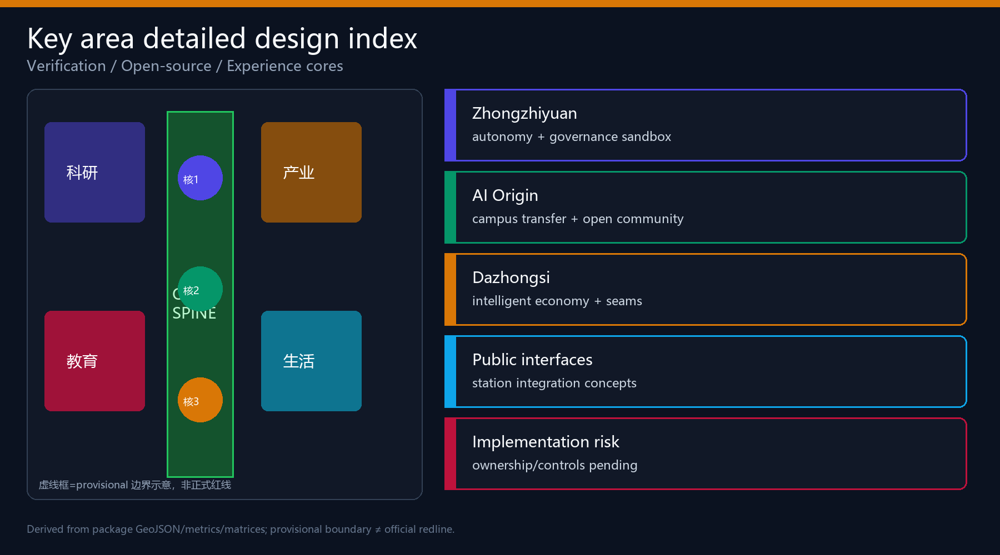
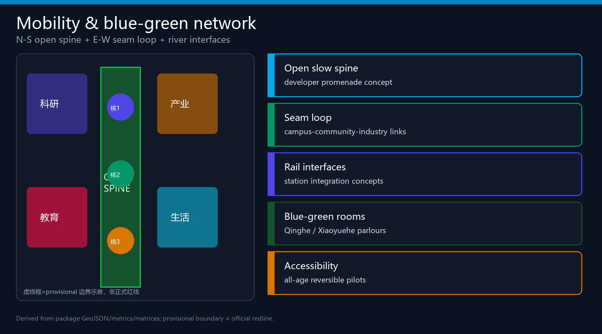
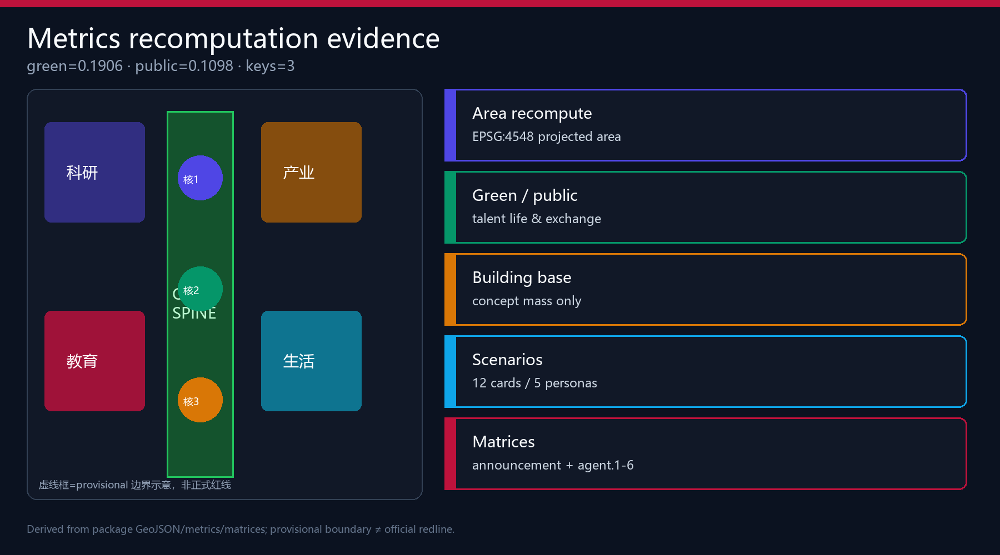

JingZhang Open Spine · AI Innovation Corridor
OPEN SPINE organises the 11.4 km² design area as one spine, three cores, dual wings and twelve nodes. All spatial moves are conceptual references on a provisional boundary and must be recomputed after official polygons arrive.
JingZhang Open Spine · AI Innovation Corridor
Design Basis and Source List
This formal package is based on the Haidian pre-qualification announcement for the Centennial Jing-Zhang AI Innovation Belt and the machine-readable site package constraints 来源 来源 来源. Agent tasks follow the open-call taskbook 来源 标准.
Formal claims use only formal-ready or cleared sources. Provisional geometry is for generation, visualisation and intake self-check only, not official redlines or precise area scoring evidence 来源 来源. Organiser data gaps do not block content scoring but must stay disclosed. The processed fact pack is a navigation layer, not a new authority 来源 深度.

Submitted site_boundary and key_areas are provisional_constraint features. After official polygons arrive, land use, buildings, roads, green/public space, phasing and all known metrics must be recomputed 空间数据 指标.
Three-Level Scope Framework
Work is organised in three levels 深度 标准: coordinated research (~43.6 km²), overall design (~11.4 km²), and key detailed design (~368.4 ha). Submitted overall design area recalculates to 指标=11412825.386 m² under provisional geometry.
Spatial structure: one spine, three cores, dual wings, twelve nodes 深度 — Open Green Spine; Verification/Open-source/Experience cores; Zhongguancun service wing and Xiaoyuehe scenario wing; twelve scenario anchors.

Coordinated Research Area: Industry and Future City Research
Naming and visual identity (agent.1)
- Chinese: 京张智脊
- English: JingZhang Open Spine
- Subtitle: AI Innovation Corridor
- Logo direction: rail-sleeper geometry as an open protocol spine with an OPEN window; deep teal + signal green + indigo. No unauthorised trademarks or likenesses.
Three positionings and five functions follow the taskbook; three-area/two-wing loop moves capability from verification to open-source translation to market experience, with dual wings supplying capital/IP and everyday scenario rollout 来源 标准.
Global ecosystem cases (agent.2)
Six transferable cases: Kendall Square (campus triangle), King’s Cross (station-city ops), one-north (R&D-life mix), Nanshan (industry-city density), Toranomon Hills (vertical public rooms), Zhangjiang (national platforms). Mechanisms map to Origin, Dazhongsi, Zhongzhiyuan and the service wing 空间数据 深度.
Overall Design Area: Urban Renewal and Regulatory-Plan-Level Urban Design
Regulatory-plan urban design depth is addressed as a method and evidence structure, while FAR, height, setbacks and road redlines remain pending without official controls 标准 深度 深度.
Land use is a topology-safe five-band partition: R&D (0802), open spine park (1401), industry services (05), education transfer (0804), community support (0702) 空间数据 空间数据. Renewal priority: public seams first, then industry interfaces, then deep rebuild units after ownership/engineering clarity.
Concept building footprints 空间数据 指标=787181.46 m²; roads express N-S spine, E-W seam loop and station links 空间数据 深度.
Detailed Design of Key Areas
All three KEY_AREA polygons are provisional; conclusions are directional concept suggestions 深度 空间数据.

Zhongzhiyuan · Verification Core: garden-type full-stack autonomy and governance sandbox; Qinghe blue-green interface; cautious retain/renovate method without parcel demolition verdicts 深度.
AI Origin · Open-source Core: campus-adjacent transfer street, open release hall, talent services, station walkability seams.
Dazhongsi · Experience Core: four-quadrant station connectivity, intelligent economy rooms, international pitch parlour and data-element interface.
AI Innovation Ecosystem, Personas, and AI+ Scenarios
Five personas: open-source developers, startups, enterprise visitors, nearby residents, campus users — each with space response and privacy limits 指标.
Twelve scenario cards (≥10, with ≥3 industry validation tests): open release hall; safety sandbox (test); slow-path diagnosis; edge compute stop (test); international pitch; campus transfer street; data parlor (test); living-service lane; memory trail; global AI week route; agent honor wall; governance forum 指标 空间数据 空间数据 指标.
Land Use, Building Scale, and Retain-Renovate-Demolish Strategy
Land-use coverage is complete and non-overlapping 空间数据 标准. Statutory FAR/height remain unknown 指标 深度. RRD is a method only until ownership and regulatory conditions exist 深度. Building footprints are conceptual discussion quantities only.
Transport, Rail, Municipal Infrastructure, and Public Services
The transport intent is to convert the heritage park from a corridor cut by roads into an everyday open slow spine, then reconnect campuses, communities and industry edges with an east-west seam loop. geometry/roads.geojson expresses the N-S spine, E-W seam and outer loop as concept geometry, not statutory road redlines 空间数据. Continuity is co-explained with the public-space ratio 指标 under the mobility depth item 深度.
Rail/station integration stays at interface principles: four-quadrant walk pockets around Dazhongsi Station, campus-adjacent transfer buffers near Wudaokou/Tsinghua East Road West Gate, and break-point repair at North Fifth Ring crossings rather than new express cuts. Without official redlines, station control areas and intersection designs, these remain conceptual.
Municipal and new infrastructure ideas—edge compute stops, distributed energy sketches, innovation service desks and talent living services—must be deepened with service radii, fire rescue and power capacity. The public package cannot support utility-grade conclusions yet 深度. Low-speed delivery and robot pilots are limited to reversible test segments with human takeover paths.
Pending data: official road redlines, rail station controls, parking standards, utility composites, fire and flood conditions. Until then this chapter supports urban-design discussion and scenario placement only.

Blue-Green Network, Public Space, and Urban Character
Open Green Spine links Qinghe and Xiaoyuehe interfaces for walk/cycle/stay 深度 空间数据 指标=0.190579. Public-space ratio 指标=0.10981 supports daily exchange and festival routes 空间数据 标准.
Three pilgrimage landmarks (agent.4): Open Protocol Sleeper Gallery; Agent Honor Wall; Verification Beacon Court 指标. Character mixes industrial heritage restraint, Zhongguancun openness and explainable AI interfaces 深度.
Renewal Projects, Implementation Policy, and Phasing
Eight concept projects (OS-01…OS-08) cover spine seams, verification waterfront, open release hall, transfer street, four-quadrant links, edge compute pilot, honor wall/memory trail, and annual AI week operations 空间数据 深度 深度 指标.
Long-term operations (agent.6): seasonal open festival, scenario open days, international pitch week and governance forum — conceptual, not government-committed schedules. Cultural narrative (agent.5) braids railway autonomy, Zhongguancun collaboration and explainable AI co-governance along the walkable spine.
Metrics, Area Recalculation, and Compliance Matrix
Known metrics are recomputed in EPSG:4548 from package geometry 深度: site 指标=11412825.386; green 指标=0.190579; public 指标=0.10981; building footprint 指标=787181.46; key areas 指标=3; scenarios/personas/landmarks/cases as structured counts. Compliance, standard and design-depth matrices cover announcement tasks 1.3–1.5 and agent.1–agent.6.

Risk, Copyright, and Compliance
Key risks: provisional geometry precision, missing regulatory/ownership/municipal conditions, heritage unknowns, privacy/event safety 深度 空间数据. No official approval claims, no pseudo-precise redlines, no sensitive personal data, no uncleared assets. All spatial, operational and policy ideas are conceptual references for professional deepening. Bilingual counterparts pair HTML/PDF/figures; licenses appear in sources.json and report/copyright_statement.md.
References
- brief/public-brief.md, design_brief.json, agent_taskbook.json
- data/source_registry.json, agent_fact_pack.md
- provisional_boundaries.geojson
- formal-submission-guide.md, terminology-glossary.md
- Full machine indexes in
sources.json,metrics.jsonand the three matrices 来源